The Wave, three studies
Three constructions of one barbed-wire wave, each shown as four composed stills rendered on the real GPU at 1440 × 900. Click a still, or “open live”, to see it rendered in the browser; inside a study the keys 1–4 switch views. Documents: audit, research, art direction, evaluation, handoff.
A — The Stroke
One wire, one gesture: horizon, long back, a lip that throws and folds back on itself, the face, out to sea. Barbs gathered at the curl. Recommended.
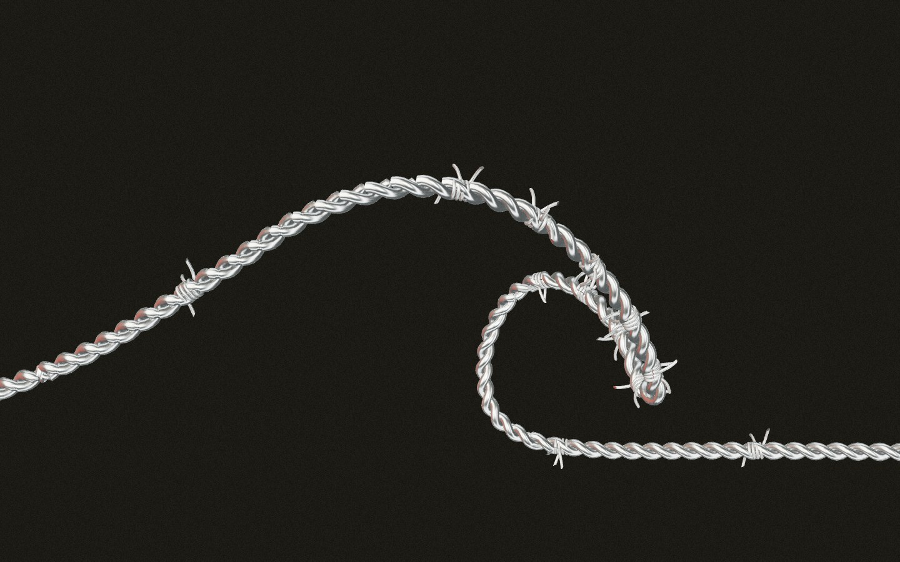
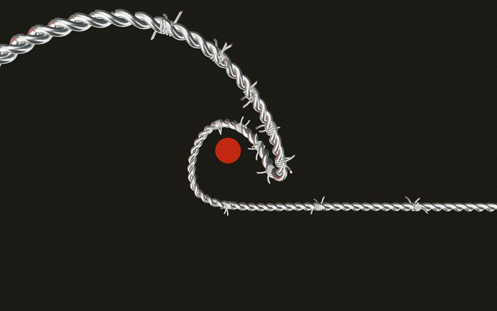
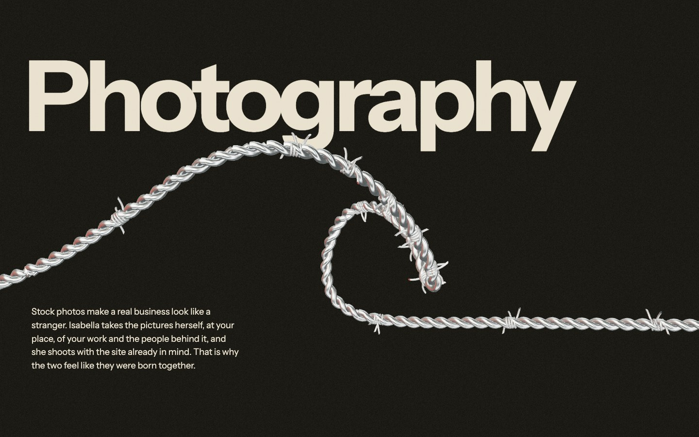
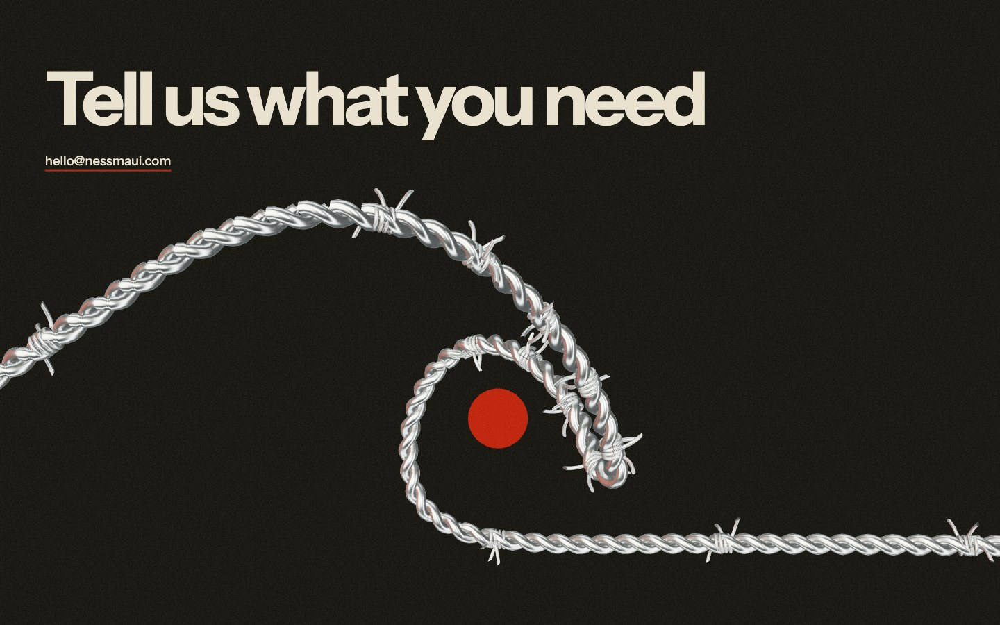
B — Frames
Five open profiles of one wave breaking (swell, steep, pitching, barrel, collapse), standing on the Bridge’s horizon wire, like exposures of a film.
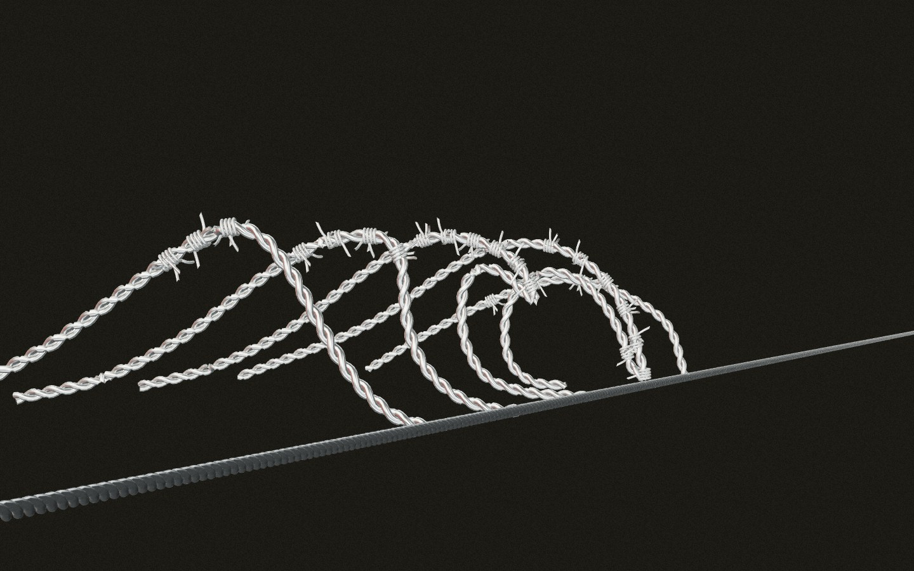
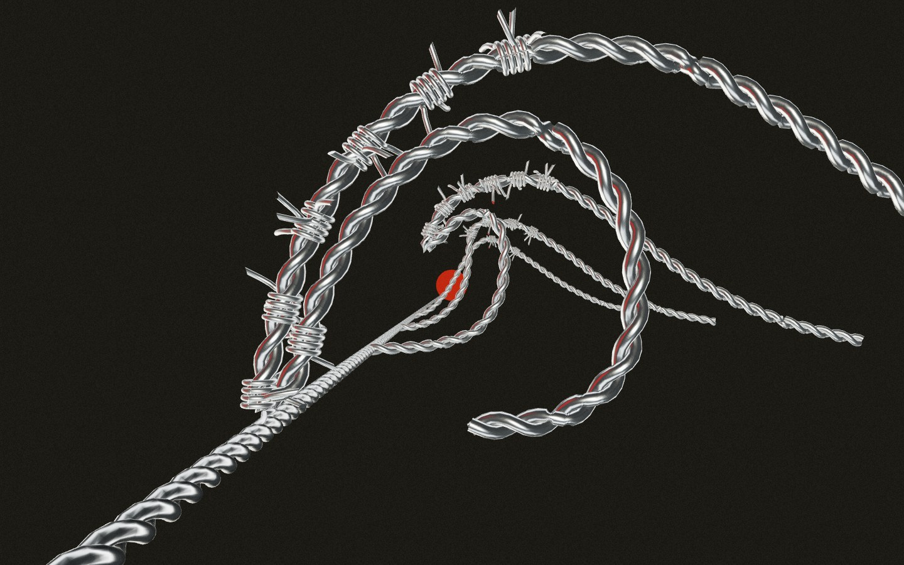
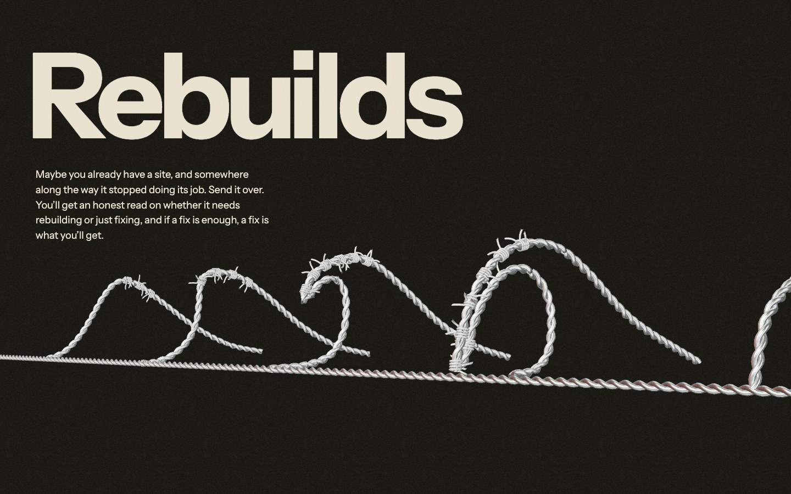
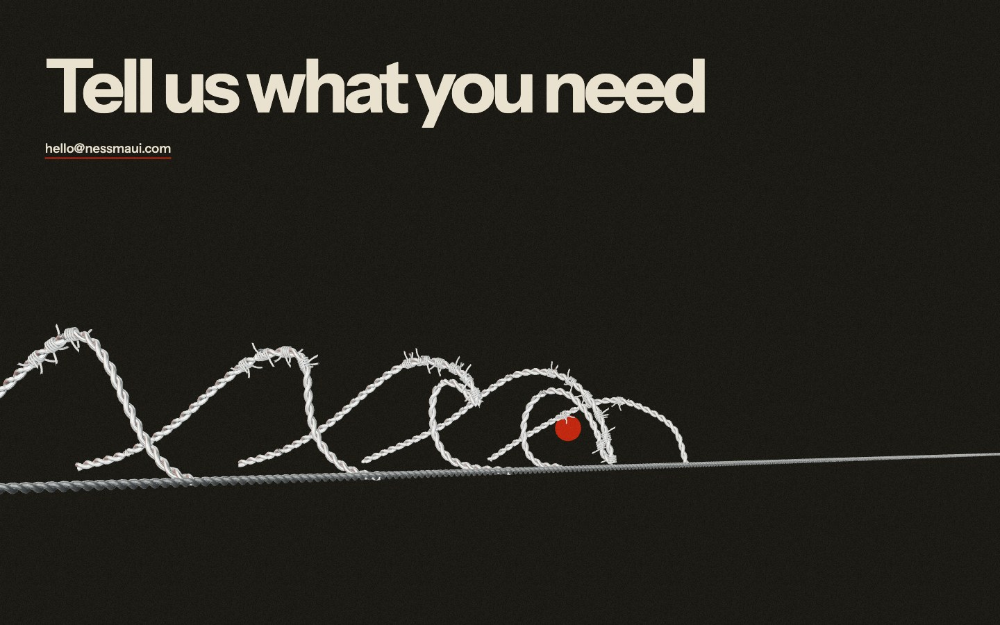
C — Tension
Fence wire strung dead straight from a back rail to a hooked lip rail: a taut ruled sheet for the wave’s long back, the barrel left empty.
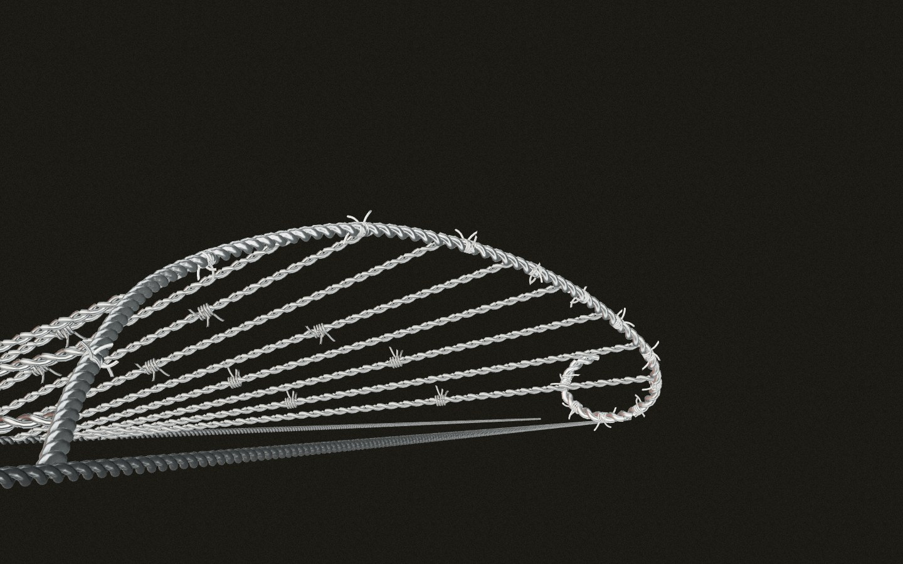
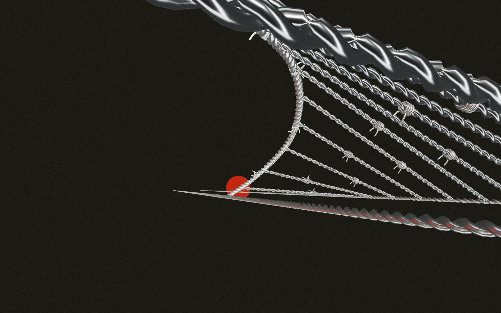
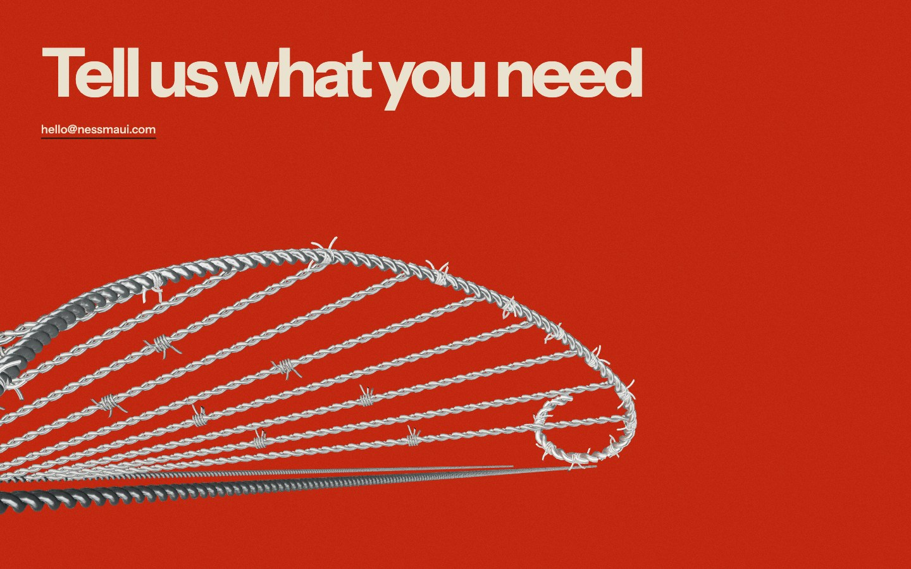
A in motion
The camera never moves; scroll drives one wire through flat line, swell, pitching lip, barrel, collapse and the next swell. Open the motion proof and scroll.
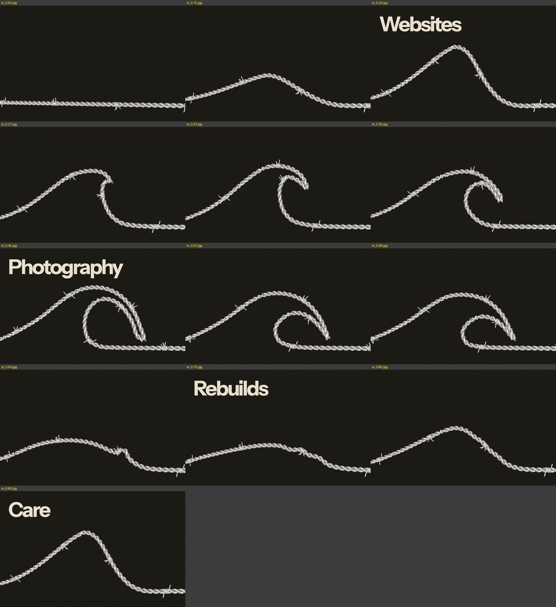
Rejected on the way
Streamlines (left): five wires running along the wave can’t show the overhang, so it read as a bundle of cables and was replaced by Frames. Tension, first build (right): strings filled the barrel and read as a harp; they moved to the wave’s back.
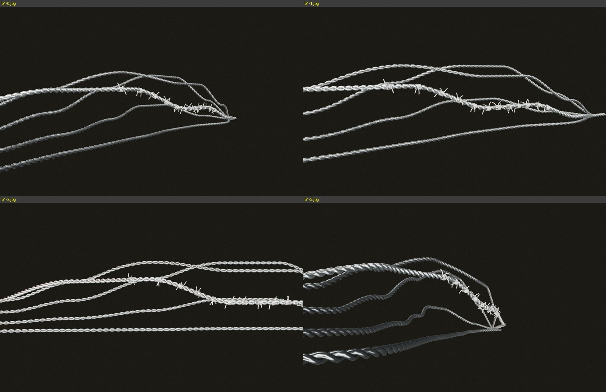
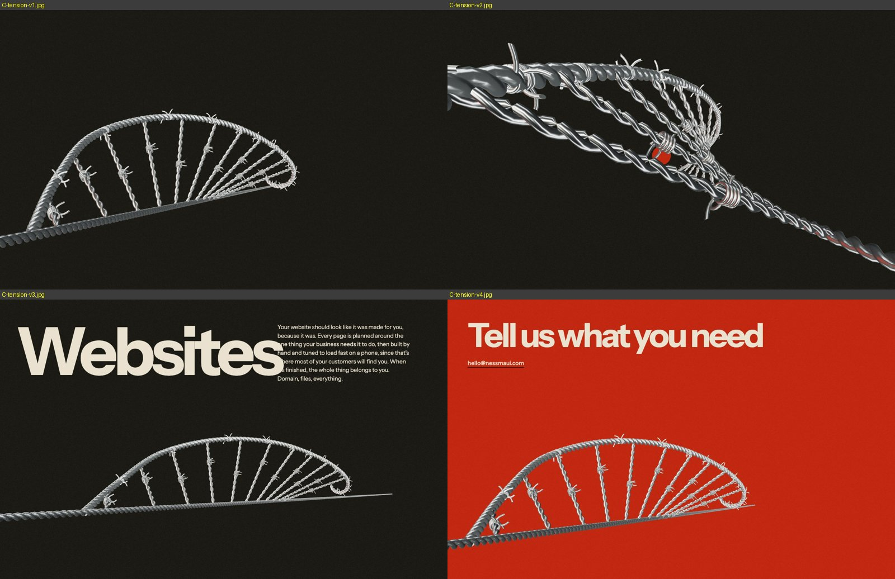